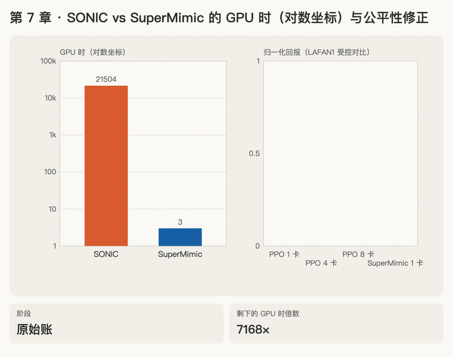
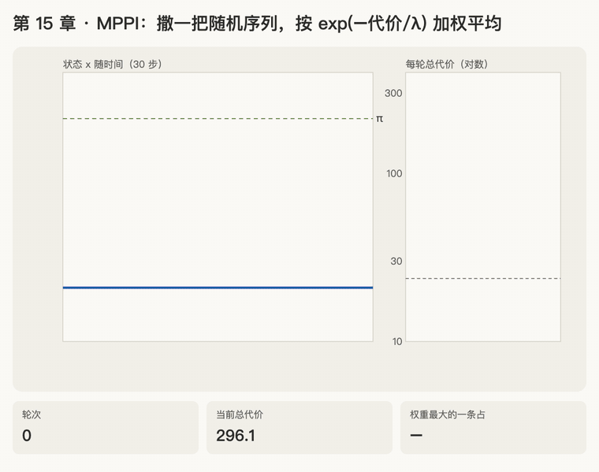
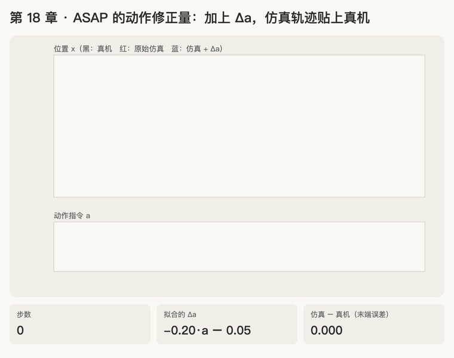

机器人运控与强化学习
《从零学强化学习》的续篇：从 PPO 接着讲，经过运控分层与 PD 接口、动作跟踪、PPO 配方、仿真到真机、动作模仿、GRPO 与信用分配、算力账、两种梯度、可微 world model、BPTT + critic，拼出 SuperMimic；第二部分补上 LQR、ZMP、凸 MPC、iLQR / MPPI、AMP、SHAC 和上真机。共 18 章，每章配动画。
前置：《从零学强化学习》（24 章，从回报讲到 PPO、GRPO）。
每章的结构：本章回答的问题 → 讲解（白话类比 → 公式 → 例子）→ 练习与作答记录 → 口诀 → 复习卡片 → 延伸阅读。
怎么看
- 讲义：每章正文里嵌着 GIF 动画，打开就能播放。
- 可交互动画：章节标题下的"打开本章可交互动画"，或点下面的卡片进入讲义后再打开。按钮：▶ 播放自动演示，→ 单步自己控制节奏，↺ 从头开始；有滑块的可以拖动参数。
- 复习卡片：先看问题自己答，再点开折叠的答案核对。
全部章节
 第 1 章运控的三层与 PD 目标接口：策略不直接给力矩
第 1 章运控的三层与 PD 目标接口：策略不直接给力矩 第 2 章把动作跟踪写成 MDP：看什么、做什么、怎么打分、什么时候算摔
第 2 章把动作跟踪写成 MDP：看什么、做什么、怎么打分、什么时候算摔 第 3 章运控里的 PPO 配方：高斯策略、几千个环境、按 KL 调学习率
第 3 章运控里的 PPO 配方：高斯策略、几千个环境、按 KL 调学习率 第 4 章从仿真到真机：域随机化、特权信息与 teacher-student
第 4 章从仿真到真机：域随机化、特权信息与 teacher-student 第 5 章动作模仿：从哪开始练、什么时候喊停、难的地方多练
第 5 章动作模仿：从哪开始练、什么时候喊停、难的地方多练 第 6 章GRPO 为什么不适合底层运控：整条打分 vs 逐步打分
第 6 章GRPO 为什么不适合底层运控：整条打分 vs 逐步打分
第 7 章规模化的代价：动作越多，PPO 越要堆算力 第 8 章两种梯度：「试了打分」的似然比梯度 vs 「顺着公式求导」的解析梯度
第 8 章两种梯度：「试了打分」的似然比梯度 vs 「顺着公式求导」的解析梯度 第 9 章可微 world model：学一个能求导的「物理模拟器」
第 9 章可微 world model：学一个能求导的「物理模拟器」 第 10 章在想象里训练：BPTT 只看 32 步，critic 补上后面
第 10 章在想象里训练：BPTT 只看 32 步，critic 补上后面 第 11 章SuperMimic 全流程：三步循环、关键超参、结果和怎么选路线
第 11 章SuperMimic 全流程：三步循环、关键超参、结果和怎么选路线 第 12 章LQR：模型已知、线性、二次代价时，Bellman 方程有闭式解
第 12 章LQR：模型已知、线性、二次代价时，Bellman 方程有闭式解 第 13 章线性倒立摆与 ZMP：双足机器人为什么要不停地迈步
第 13 章线性倒立摆与 ZMP：双足机器人为什么要不停地迈步 第 14 章单刚体凸 MPC 与 WBC：四足怎么「算」出每只脚该推多大力
第 14 章单刚体凸 MPC 与 WBC：四足怎么「算」出每只脚该推多大力
第 15 章iLQR 与 MPPI：不训练策略，每次现算一条轨迹 第 16 章AMP：不逐帧跟踪，只要求「动作像人」
第 16 章AMP：不逐帧跟踪，只要求「动作像人」 第 17 章可微仿真与 SHAC：SuperMimic 之前，解析梯度是怎么来的
第 17 章可微仿真与 SHAC：SuperMimic 之前，解析梯度是怎么来的
第 18 章上真机：执行器网络、动作修正量与 sim2sim 检查